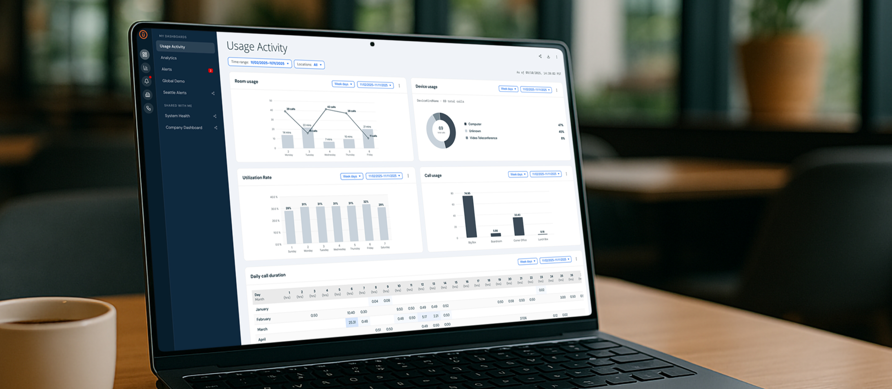
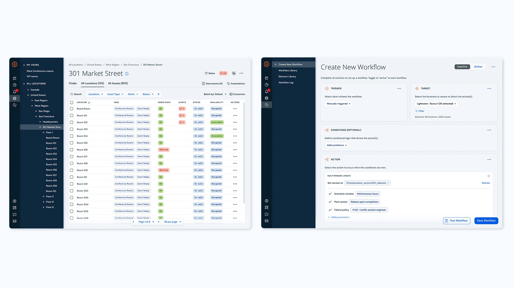

Property Management Platform
Led a major platform transformation—expanding a legacy AV tool into a cloud-based system capable of managing any connected asset across an enterprise estate, with a new automation system and a rebuilt product foundation to support it.

The platform had been built around AV and technology assets—but the ambition was bigger. To reach more sophisticated enterprise customers and manage estates more holistically, it needed to expand beyond AV to any connected asset, move entirely to the cloud, and introduce a powerful new automation system built from scratch.

I personally drove 90% of the UX design, starting with product direction before moving into detailed design across the platform’s four core experience areas: asset management, monitoring, workflow automation, and analytics.
The work made a highly complex future-state system legible to engineering and stakeholders, giving the product team a concrete vision to align around.